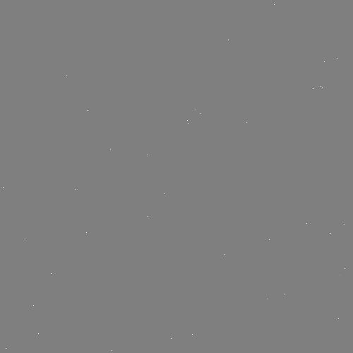

TensorFlow 不仅仅是用来机器学习，它更可以用来模拟仿真。在这里，我们将通过模拟仿真几滴落入一块方形水池的雨点的例子，来引导您如何使用 TensorFlow 中的偏微分方程来模拟仿真的基本使用方法。
注：本教程最初是准备做为一个 IPython 的手册。
译者注:关于偏微分方程的相关知识，译者推荐读者查看 网易公开课 上的《麻省理工学院公开课：多变量微积分》课程。
首先,我们需要导入一些必要的引用。
#导入模拟仿真需要的库
import tensorflow as tf
import numpy as np
#导入可视化需要的库
import PIL.Image
from cStringIO import StringIO
from IPython.display import clear_output, Image, display然后，我们还需要一个用于表示池塘表面状态的函数。
def DisplayArray(a, fmt='jpeg', rng=[0,1]):
"""Display an array as a picture."""
a = (a - rng[0])/float(rng[1] - rng[0])*255
a = np.uint8(np.clip(a, 0, 255))
f = StringIO()
PIL.Image.fromarray(a).save(f, fmt)
display(Image(data=f.getvalue()))最后，为了方便演示，这里我们需要打开一个 TensorFlow 的交互会话（interactive session）。当然为了以后能方便调用，我们可以把相关代码写到一个可以执行的Python文件中。
sess = tf.InteractiveSession()def make_kernel(a):
"""Transform a 2D array into a convolution kernel"""
a = np.asarray(a)
a = a.reshape(list(a.shape) + [1,1])
return tf.constant(a, dtype=1)
def simple_conv(x, k):
"""A simplified 2D convolution operation"""
x = tf.expand_dims(tf.expand_dims(x, 0), -1)
y = tf.nn.depthwise_conv2d(x, k, [1, 1, 1, 1], padding='SAME')
return y[0, :, :, 0]
def laplace(x):
"""Compute the 2D laplacian of an array"""
laplace_k = make_kernel([[0.5, 1.0, 0.5],
[1.0, -6., 1.0],
[0.5, 1.0, 0.5]])
return simple_conv(x, laplace_k)首先,我们需要创建一个完美的 500 × 500 的正方形池塘,就像是我们在现实中找到的一样。
N = 500然后，我们需要创建了一个池塘和几滴将要坠入池塘的雨滴。
# Initial Conditions -- some rain drops hit a pond
# Set everything to zero
u_init = np.zeros([N, N], dtype="float32")
ut_init = np.zeros([N, N], dtype="float32")
# Some rain drops hit a pond at random points
for n in range(40):
a,b = np.random.randint(0, N, 2)
u_init[a,b] = np.random.uniform()
DisplayArray(u_init, rng=[-0.1, 0.1])
现在，让我们来指定该微分方程的一些详细参数。
# Parameters:
# eps -- time resolution
# damping -- wave damping
eps = tf.placeholder(tf.float32, shape=())
damping = tf.placeholder(tf.float32, shape=())
# Create variables for simulation state
U = tf.Variable(u_init)
Ut = tf.Variable(ut_init)
# Discretized PDE update rules
U_ = U + eps * Ut
Ut_ = Ut + eps * (laplace(U) - damping * Ut)
# Operation to update the state
step = tf.group(
U.assign(U_),
Ut.assign(Ut_))为了能看清仿真效果，我们可以用一个简单的 for 循环来远行我们的仿真程序。
# Initialize state to initial conditions
tf.initialize_all_variables().run()
# Run 1000 steps of PDE
for i in range(1000):
# Step simulation
step.run({eps: 0.03, damping: 0.04})
# Visualize every 50 steps
if i % 50 == 0:
clear_output()
DisplayArray(U.eval(), rng=[-0.1, 0.1])看！！ 雨点落在池塘中,和现实中一样的泛起了涟漪。
原文链接:http://tensorflow.org/tutorials/pdes/index.md 翻译:@wangaicc 校对:@tensorfly